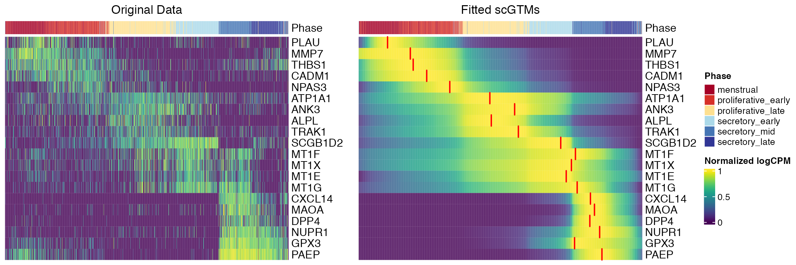

Real Data Analysis Example 1
Dongyuan Song
Bioinformatics IDP, University of California, Los Angelesdongyuansong@ucla.edu
Lehan Zou
Dertment of Statistics, University of California, Los Angeleslehanz77@g.ucla.edu
Shiyu Ma
Department of Statistics, University of California, Los Angelessylviama1026@g.ucla.edu Source:
vignettes/RealDataAnalysis1.Rmd
RealDataAnalysis1.RmdReal Data Analysis Example 1
Introduction
In this example, we will show scGTM recapitulates gene expression trends of endometrial transformation in the human menstrual cycle.This is originally from the second example the author showed in part 3 of the scGTM paper.
suppressPackageStartupMessages(library(tidyverse))
suppressPackageStartupMessages(library(SingleCellExperiment))
suppressPackageStartupMessages(library(ComplexHeatmap))
suppressPackageStartupMessages(library(viridis))
suppressPackageStartupMessages(library(useful))
suppressPackageStartupMessages(library(RColorBrewer))
suppressPackageStartupMessages(library(scales))
suppressPackageStartupMessages(library(DESeq2))
suppressPackageStartupMessages(library(scGTM))Read the Reference Data
This WANG dataset contains 20 exemplar genes that exhibit temporal expression trends in unciliated epithelia cells in the human menstrual cycle.
wang_sce <- readRDS("wang_sce.rds")
gene_vec <- c("PLAU", "MMP7", "THBS1", "CADM1", "NPAS3", "ATP1A1", "ANK3", "ALPL", "TRAK1", "SCGB1D2", "MT1F", "MT1X", "MT1E", "MT1G", "CXCL14", "MAOA", "DPP4", "NUPR1", "GPX3", "PAEP")
GSE111976_summary_C1_donor_phase <- read_csv("GSE111976_summary_C1_donor_phase.csv")## New names:
## Rows: 19 Columns: 4
## ── Column specification
## ──────────────────────────────────────────────────────── Delimiter: "," chr
## (1): phase_canonical dbl (3): ...1, donor, phase_sc_Fig.3
## ℹ Use `spec()` to retrieve the full column specification for this data. ℹ
## Specify the column types or set `show_col_types = FALSE` to quiet this message.
## • `` -> `...1`
colData(wang_sce)$phase_canonical <- sapply(colData(wang_sce)$donor, function(x) {
res <- GSE111976_summary_C1_donor_phase %>% dplyr::filter(donor == x) %>% dplyr::select(phase_canonical) %>% simplify2array()
res
})
colData(wang_sce)$phase_canonical <- factor(colData(wang_sce)$phase_canonical, levels = c("menstrual", "proliferative_early","proliferative_late", "secretory_early","secretory_mid", "secretory_late"))
wang_sub <- wang_sce[gene_vec, ]
cell_order <- colData(wang_sub) %>%as_tibble(rownames = "cell") %>% dplyr::arrange(pseudotime)%>% .$cell
pseudotime <- colData(wang_sub) %>%as_tibble(rownames = "cell") %>% dplyr::arrange(pseudotime)%>% .$pseudotime
wang_sub <- wang_sub[gene_vec, cell_order]
mat <- log1p(round((assay(wang_sub, "cpm"))))
cell_order <- colData(wang_sub) %>% as_tibble(rownames = "cell") %>% dplyr::arrange(pseudotime)%>% .$cell
pseudotime <- colData(wang_sub) %>% as_tibble(rownames = "cell") %>% dplyr::arrange(pseudotime)%>% .$pseudotime
mat <- mat[, cell_order]
mat <- t(apply(mat, 1, rescale))Find color which is appropriate
ha = HeatmapAnnotation(Phase = colData(wang_sub)$phase_canonical, col = list(Phase = c("menstrual" = "#A50026", "proliferative_early" = "#D73027","proliferative_late" = "#FEE090", "secretory_early" = "#ABD9E9","secretory_mid" = "#4575B4", "secretory_late" = "#313695")))
p1 <- ComplexHeatmap::Heatmap(mat, cluster_rows = FALSE, cluster_columns = FALSE, show_column_names = FALSE, col=viridis(50), top_annotation = ha, name = "heatmap1", show_heatmap_legend = FALSE, column_title = "Original Data")
dat <- data.frame(Index = colnames(mat), pseudotime = colData(wang_sub)$pseudotime)
dat <- cbind(dat, round(t(assay(wang_sub, "cpm"))))Import parameter csv
Poisson_para<-runscGTM(t=rownames(wang_sub), y=wang_sub, sce="counts", marginal="Poisson",hill_only = TRUE)## The need of transformation: FALSE
## We are estimating gene MT1F with marginal Poisson .
## Best parameter estimation:
## mu , k1 , k2 , t0:
## 4.65 2.06 30.48 0.73 6.57
## The 95% confidence interval of the activation time t0:
## t0 : ( 0.709 , 0.744 )
##
## The 95% CIs for activation strength k1 and k2:
## k1 : ( 1.827 , 2.29 )
## k2 : ( 22.364 , 38.588 )
## The need of transformation: FALSE
## We are estimating gene MT1X with marginal Poisson .
## Best parameter estimation:
## mu , k1 , k2 , t0:
## 4.29 2.12 16.1 0.67 -35.3
## The 95% confidence interval of the activation time t0:
## t0 : ( 0.648 , 0.697 )
##
## The 95% CIs for activation strength k1 and k2:
## k1 : ( 1.812 , 2.42 )
## k2 : ( 11.476 , 20.721 )
## The need of transformation: FALSE
## We are estimating gene MT1E with marginal Poisson .
## Best parameter estimation:
## mu , k1 , k2 , t0:
## 4.06 3.23 7.19 0.64 -15.87
## The 95% confidence interval of the activation time t0:
## t0 : ( 0.601 , 0.67 )
##
## The 95% CIs for activation strength k1 and k2:
## k1 : ( 2.687 , 3.783 )
## k2 : ( 4.591 , 9.78 )
## The need of transformation: FALSE
## We are estimating gene MT1G with marginal Poisson .
## Best parameter estimation:
## mu , k1 , k2 , t0:
## 5.43 3.51 47.7 0.73 -66.68
## The 95% confidence interval of the activation time t0:
## t0 : ( 0.719 , 0.743 )
##
## The 95% CIs for activation strength k1 and k2:
## k1 : ( 3.24 , 3.779 )
## k2 : ( 37.784 , 57.612 )
## The need of transformation: TRUE
## We are estimating gene CXCL14 with marginal Poisson .
## Best parameter estimation:
## mu , k1 , k2 , t0:
## 6.18 54.42 53.49 0.77 70.46
## The 95% confidence interval of the activation time t0:
## t0 : ( 0.761 , 0.78 )
##
## The 95% CIs for activation strength k1 and k2:
## k1 : ( 47.075 , 61.763 )
## k2 : ( 42.879 , 64.107 )
## The need of transformation: FALSE
## We are estimating gene MAOA with marginal Poisson .
## Best parameter estimation:
## mu , k1 , k2 , t0:
## 5.85 99 64.44 0.78 17.44
## The 95% confidence interval of the activation time t0:
## t0 : ( 0.769 , 0.785 )
##
## The 95% CIs for activation strength k1 and k2:
## k1 : ( 82.13 , 115.87 )
## k2 : ( 51.934 , 76.939 )
## The need of transformation: TRUE
## We are estimating gene DPP4 with marginal Poisson .
## Best parameter estimation:
## mu , k1 , k2 , t0:
## 5.14 72.66 35.52 0.77 6.25
## The 95% confidence interval of the activation time t0:
## t0 : ( 0.759 , 0.782 )
##
## The 95% CIs for activation strength k1 and k2:
## k1 : ( 59.639 , 85.673 )
## k2 : ( 27.194 , 43.847 )
## The need of transformation: FALSE
## We are estimating gene NUPR1 with marginal Poisson .
## Best parameter estimation:
## mu , k1 , k2 , t0:
## 5.71 25.11 23.22 0.79 -47.81
## The 95% confidence interval of the activation time t0:
## t0 : ( 0.773 , 0.801 )
##
## The 95% CIs for activation strength k1 and k2:
## k1 : ( 21.787 , 28.424 )
## k2 : ( 16.45 , 29.999 )
## The need of transformation: TRUE
## We are estimating gene GPX3 with marginal Poisson .
## Best parameter estimation:
## mu , k1 , k2 , t0:
## 8.23 -40.03 9.39 0.72 47.85
## The 95% confidence interval of the activation time t0:
## t0 : ( 0.72 , 0.725 )
##
## The 95% CIs for activation strength k1 and k2:
## k1 : ( -41.167 , -38.895 )
## k2 : ( 8.321 , 10.463 )
## The need of transformation: TRUE
## We are estimating gene PAEP with marginal Poisson .
## Best parameter estimation:
## mu , k1 , k2 , t0:
## 9.27 51.74 34.21 0.79 13.8
## The 95% confidence interval of the activation time t0:
## t0 : ( 0.787 , 0.8 )
##
## The 95% CIs for activation strength k1 and k2:
## k1 : ( 46.892 , 56.595 )
## k2 : ( 28.621 , 39.794 )## The need of transformation: FALSE
## We are estimating gene PLAU with marginal Poisson .
## Best parameter estimation:
## mu , k1 , k2 , t0:
## 5.41 86.22 34.32 0.15 4
## The 95% confidence interval of the activation time t0:
## t0 : ( 0.144 , 0.162 )
##
## The 95% CIs for activation strength k1 and k2:
## k1 : ( 63.3 , 109.138 )
## k2 : ( 30.292 , 38.352 )
## The need of transformation: TRUE
## We are estimating gene MMP7 with marginal Poisson .
## Best parameter estimation:
## mu , k1 , k2 , t0:
## 5.67 2.42 17.73 0.21 19.38
## The 95% confidence interval of the activation time t0:
## t0 : ( 0.187 , 0.224 )
##
## The 95% CIs for activation strength k1 and k2:
## k1 : ( -0.344 , 5.186 )
## k2 : ( 15.247 , 20.213 )
## The need of transformation: TRUE
## We are estimating gene THBS1 with marginal Poisson .
## Best parameter estimation:
## mu , k1 , k2 , t0:
## 5.54 13.1 17.84 0.21 -99
## The 95% confidence interval of the activation time t0:
## t0 : ( 0.198 , 0.229 )
##
## The 95% CIs for activation strength k1 and k2:
## k1 : ( 8.71 , 17.481 )
## k2 : ( 15.589 , 20.094 )
## The need of transformation: TRUE
## We are estimating gene CADM1 with marginal Poisson .
## Best parameter estimation:
## mu , k1 , k2 , t0:
## 5.05 10.43 16.4 0.24 -1.65
## The 95% confidence interval of the activation time t0:
## t0 : ( 0.221 , 0.255 )
##
## The 95% CIs for activation strength k1 and k2:
## k1 : ( 6.942 , 13.926 )
## k2 : ( 14.09 , 18.707 )
## The need of transformation: FALSE
## We are estimating gene NPAS3 with marginal Poisson .
## Best parameter estimation:
## mu , k1 , k2 , t0:
## 4.27 30.29 15.57 0.29 0.34
## The 95% confidence interval of the activation time t0:
## t0 : ( 0.274 , 0.3 )
##
## The 95% CIs for activation strength k1 and k2:
## k1 : ( 24.274 , 36.298 )
## k2 : ( 13.536 , 17.602 )
## The need of transformation: FALSE
## We are estimating gene ATP1A1 with marginal Poisson .
## Best parameter estimation:
## mu , k1 , k2 , t0:
## 4.59 4.76 5.09 0.44 39.01
## The 95% confidence interval of the activation time t0:
## t0 : ( 0.408 , 0.465 )
##
## The 95% CIs for activation strength k1 and k2:
## k1 : ( 3.605 , 5.906 )
## k2 : ( 4.226 , 5.96 )
## The need of transformation: FALSE
## We are estimating gene ANK3 with marginal Poisson .
## Best parameter estimation:
## mu , k1 , k2 , t0:
## 4.86 6.04 13.54 0.48 7.51
## The 95% confidence interval of the activation time t0:
## t0 : ( 0.467 , 0.501 )
##
## The 95% CIs for activation strength k1 and k2:
## k1 : ( 5.175 , 6.908 )
## k2 : ( 11.71 , 15.374 )
## The need of transformation: FALSE
## We are estimating gene ALPL with marginal Poisson .
## Best parameter estimation:
## mu , k1 , k2 , t0:
## 4.41 11.12 23.4 0.44 41.75
## The 95% confidence interval of the activation time t0:
## t0 : ( 0.43 , 0.458 )
##
## The 95% CIs for activation strength k1 and k2:
## k1 : ( 9.564 , 12.685 )
## k2 : ( 19.772 , 27.018 )
## The need of transformation: FALSE
## We are estimating gene TRAK1 with marginal Poisson .
## Best parameter estimation:
## mu , k1 , k2 , t0:
## 4.42 6.95 19.41 0.49 48.79
## The 95% confidence interval of the activation time t0:
## t0 : ( 0.477 , 0.509 )
##
## The 95% CIs for activation strength k1 and k2:
## k1 : ( 6.017 , 7.887 )
## k2 : ( 16.6 , 22.214 )
## The need of transformation: FALSE
## We are estimating gene SCGB1D2 with marginal Poisson .
## Best parameter estimation:
## mu , k1 , k2 , t0:
## 6.53 5.25 38.29 0.61 23.09
## The 95% confidence interval of the activation time t0:
## t0 : ( 0.602 , 0.627 )
##
## The 95% CIs for activation strength k1 and k2:
## k1 : ( 4.839 , 5.66 )
## k2 : ( 32.149 , 44.439 )Gene curve function
gene_curve <- function(t, mu, k1, k2, t0, flag, maxy, hill_only) {
link<-function(t, mu, k1, k2, t0){
part1<-mu * exp(- abs(k1) * (t - t0) ** 2) * (sign(k1) + (k1 == 0))
part2<-mu * exp(- abs(k2) * (t - t0) ** 2) * (sign(k2) + (k2 == 0))
out<-part1 * (t <= t0) + part2 * (t > t0)
out
}
log_mut_fit <- link(sort(t), mu, k1, k2, t0)
if(hill_only == FALSE){
#transformation if valley
if (flag){
log_mut_fit = -log_mut_fit + log(maxy + 1)
}}
log_mut_fit
}Poisson
res <- apply(Poisson_para, 1, function(x, t_vec) {
suppressWarnings(x <- as.numeric(x))
sapply(t_vec, function(t) {
v <- gene_curve(t = t, mu = x[2], k1 = abs(x[3]), k2 = abs(x[4]),
t0 = x[5], flag=x[6], maxy=x[7], hill_only = TRUE)
v})
}, t_vec = pseudotime) %>% t()
p2 <- ComplexHeatmap::Heatmap(res, cluster_rows = FALSE, cluster_columns = FALSE, show_column_names = FALSE, col=viridis(50), top_annotation = ha, name = "Normalized logCPM", show_heatmap_legend = TRUE, column_title = "Fitted scGTMs")Pseudotime quantile
Fn <- ecdf(pseudotime)
pos <- Fn(Poisson_para$t0)Visualization
ht_list <- p1 + p2
draw(ht_list, merge_legend = TRUE, ht_gap = unit(0.2, "in"), auto_adjust = FALSE)
decorate_heatmap_body("Normalized logCPM", {
for(i in 1:20) {
grid.lines(c(pos[21-i], pos[21-i]), c((i-1)/20, i/20), gp = gpar(lty = 1, lwd = 2, col = "red"))
}
}, slice = 1) The original study ordered the 20 genes by the estimated pseudotime at which they achieved the maximum expression. The second plot shows that the data agreed well with the menstrual cycle phases using scGTM, with the red segments highlighting the estimated change times \(t_0\).